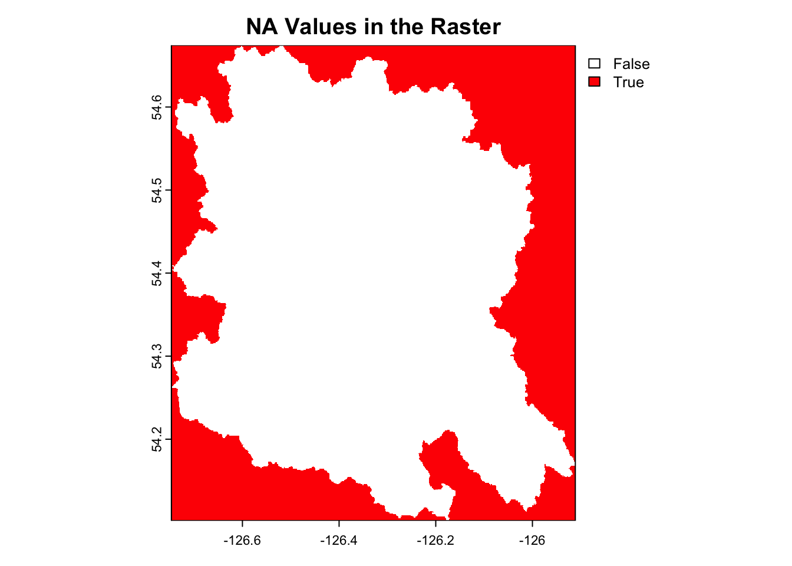
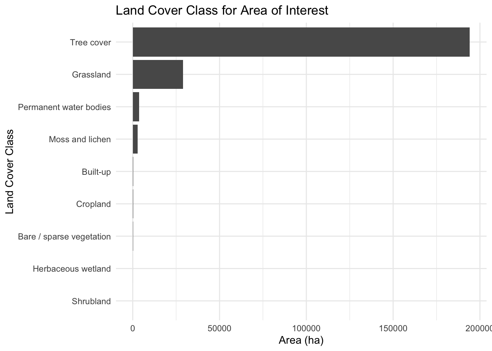

Visualize and quantify remotely sense land cover data…. Here is a first start. We will use the European Space Agency’s WorldCover product which provides global land cover maps for the years 2020 and 2021 at 10 meter resolution based on the combination of Sentinel-1 radar data and Sentinel-2 imagery. We will use the 2021 dataset for mapping an area of the Skeena watershed near Houston, British Columbia.
This post was inspired - with much of the code copied - from a repository on GitHub from the wonderfully talented Milos Popovic.
First thing we will do is load our packages. If you do not have the packages installed yet you can change the update_pkgs param in the yml of this file to TRUE. Using pak is great because it allows you to update your packages when you want to.
Code
pkgs_cran <-c("usethis","rstac","here","fs","terra","tidyverse","rayshader","sf","classInt","rgl","tidyterra","tabulapdf","bcdata","ggplot","ggdark","knitr","DT","htmlwidgets")pkgs_gh <-c("poissonconsulting/fwapgr","NewGraphEnvironment/rfp" )pkgs <-c(pkgs_cran, pkgs_gh)if(params$update_pkgs){# install the pkgslapply(pkgs, pak::pkg_install,ask =FALSE)}# load the pkgspkgs_ld <-c(pkgs_cran,basename(pkgs_gh))invisible(lapply(pkgs_ld, require,character.only =TRUE))source(here::here("scripts/functions.R"))
Define our Area of Interest
Here we diverge a bit from Milos version as we are going to load a custom area of interest. We will be connecting to our remote database using Poisson Consulting’s fwapgr::fwa_watershed_at_measure function which leverages the in database FWA_WatershedAtMeasure function from Simon Norris’ wonderful fwapg package.
We use a blue line key and a downstream route measure to define our area of interest which is the Neexdzii Kwa (a.k.a Upper Bulkley River) near Houston, British Columbia.
Uniquely identifies a single flow line such that a main channel and a secondary channel with the same watershed code would have different blue line keys (the Fraser River and all side channels have different blue line keys).
A downstream route measure is:
The distance, in meters, along the route from the mouth of the route to the feature. This distance is measured from the mouth of the containing route to the downstream end of the feature.
Code
# lets build a custom watersehed just for upstream of the confluence of Neexdzii Kwa and Wetzin Kwa# blueline keyblk <-360873822# downstream route measuredrm <-166030.4aoi <- fwapgr::fwa_watershed_at_measure(blue_line_key = blk, downstream_route_measure = drm) |> sf::st_transform(4326)#get the bounding box of our aoiaoi_bb <- sf::st_bbox(aoi)
Retrieve the Land Cover Data
For this example we will retrieve our precipitation data from Microsofts Planetary Computer. We will use usethis::use_git_ignore to add the data to our .gitignore file so that we do not commit that insano enormous tiff files to our git repository.
Now - we want to understand these datasets a bit better so let’s make a little function to view the options for datasets we can download.
Code
# Function to extract required fields# Function to extract required fieldsextract_fields <-function(x) { tibble::tibble(id = x$id,title = x$title,time_start = x[["cube:dimensions"]][["time"]][["extent"]][1],time_end = x[["cube:dimensions"]][["time"]][["extent"]][2],description = x$description )}# Apply the function to each element in ms_collections$collections and combine into a dataframedf <- purrr::map_dfr(ms_collections$collections, extract_fields)my_dt_table(df, cols_freeze_left =0, page_length =5)
Here is the description of our dataset:
The European Space Agency (ESA) [WorldCover](https://esa-worldcover.org/en) product provides global land cover maps
for the years 2020 and 2021 at 10 meter resolution based on the combination of
[Sentinel-1](https://sentinel.esa.int/web/sentinel/missions/sentinel-1) radar data and
[Sentinel-2](https://sentinel.esa.int/web/sentinel/missions/sentinel-2) imagery. The discrete classification maps
provide 11 classes defined using the Land Cover Classification System (LCCS) developed by the United Nations (UN)
Food and Agriculture Organization (FAO). The map images are stored in [cloud-optimized
GeoTIFF](https://www.cogeo.org/) format. The WorldCover product is developed by a consortium of European service
providers and research organizations. [VITO](https://remotesensing.vito.be/) (Belgium) is the prime contractor of
the WorldCover consortium together with [Brockmann Consult](https://www.brockmann-consult.de/) (Germany),
[CSSI](https://www.c-s.fr/) (France), [Gamma Remote Sensing AG](https://www.gamma-rs.ch/) (Switzerland), [International
Institute for Applied Systems Analysis](https://www.iiasa.ac.at/) (Austria), and [Wageningen
University](https://www.wur.nl/nl/Wageningen-University.htm) (The Netherlands). Two versions of the WorldCover
product are available: - WorldCover 2020 produced using v100 of the algorithm - [WorldCover 2020 v100 User
Manual](https://esa-worldcover.s3.eu-central-1.amazonaws.com/v100/2020/docs/WorldCover_PUM_V1.0.pdf) - [WorldCover
2020 v100 Validation
Report](<https://esa-worldcover.s3.eu-central-1.amazonaws.com/v100/2020/docs/WorldCover_PVR_V1.1.pdf>) - WorldCover
2021 produced using v200 of the algorithm - [WorldCover 2021 v200 User
Manual](<https://esa-worldcover.s3.eu-central-1.amazonaws.com/v200/2021/docs/WorldCover_PUM_V2.0.pdf>) -
[WorldCover 2021 v200 Validaton
Report](<https://esa-worldcover.s3.eu-central-1.amazonaws.com/v200/2021/docs/WorldCover_PVR_V2.0.pdf>) Since the
WorldCover maps for 2020 and 2021 were generated with different algorithm versions (v100 and v200, respectively),
changes between the maps include both changes in real land cover and changes due to the used algorithms.
Here we build the query for what we want. We are specifying collect_this <- "esa-worldcover".
To actually download the data we are going to put a chunk option that allows us to just execute the code once and update it with the update_gis param in our yml.
Nice. So now let’s read in these data, clip them to our area of interest with terra::crop then combine them into one tiff using terra::mosaic. In order to visualize NA values we can convert them to a mask and plot.
Code
dir_out <- here::here('posts', params$post_dir_name, "data/esa-worldcover/v200/2021/map")rast_files <-list.files( dir_out,full.names =TRUE)land_cover_raster_raw <- rast_files |> purrr::map(terra::rast) #testing for NA# v1 <- terra::values(land_cover_raster_raw[[1]])# v2 <- terra::values(land_cover_raster_raw[[2]])# # # contains NA? No!!# any(is.na(v1))# any(is.na(v2))# Clip the rasters to the AOIland_cover_raster_clipped <- purrr::map( land_cover_raster_raw,~ terra::crop(.x, aoi, snap ="in", mask =TRUE))# combine the rastersland_cover_raster <-do.call(terra::mosaic, land_cover_raster_clipped)# in order to visualize NA values we need to convert them to a mask and plotna_mask <-is.na(land_cover_raster)plot(na_mask, main ="NA Values in the Raster", col =c("white", "red"))

Resampling with Digital Elevation Model
If we want to we can grab a digital elevation model using elevatr::get_elev_raster so we can resample the land cover raster to the same resolution as the DEM. We could increase the resolution or decrease depending on the zoom level we choose.
The reason we might choose to resample (upsample or downsample) are summarized in the table below. Because the first map we wish to render (the entire Neexdzii Kwah) is quite large we will downsample so that it does not take 20 minutes to render the map. We can see the resolution of the original raster with terra::cellSize(land_cover_raster).
Code
resampling_table <- tibble::tibble(Feature =c("Definition", "Purpose", "Method", "Effect", "Example"),Upsampling =c("Increasing spatial resolution","Match higher-resolution data, enhance detail","Interpolation (nearest, bilinear, cubic)","More cells, finer detail","10m to 5m resolution" ),Downsampling =c("Decreasing spatial resolution","Reduce data size, speed up processing","Aggregation (average, sum, nearest)","Fewer cells, less detail","10m to 20m resolution" ))knitr::kable(resampling_table, caption ="Summary of Upsampling and Downsampling")
Summary of Upsampling and Downsampling
Feature
Upsampling
Downsampling
Definition
Increasing spatial resolution
Decreasing spatial resolution
Purpose
Match higher-resolution data, enhance detail
Reduce data size, speed up processing
Method
Interpolation (nearest, bilinear, cubic)
Aggregation (average, sum, nearest)
Effect
More cells, finer detail
Fewer cells, less detail
Example
10m to 5m resolution
10m to 20m resolution
Code
terra::cellSize(land_cover_raster)
class : SpatRaster
dimensions : 6870, 10028, 1 (nrow, ncol, nlyr)
resolution : 8.333333e-05, 8.333333e-05 (x, y)
extent : -126.7469, -125.9112, 54.10183, 54.67433 (xmin, xmax, ymin, ymax)
coord. ref. : lon/lat WGS 84 (EPSG:4326)
source(s) : memory
varname : ESA_WorldCover_10m_2021_v200_N54W126_Map
name : area
min value : 49.86984
max value : 50.56391
This translates to cells ~9m high x ~6m wide (~50m2). For the DEM we chose a zoom level of 11 for the DEM but we can go as high as 14. Zoom and resolution is related to latitude. For the latitude of our study area (approx 55 degrees) the resolution at zoom level 11 is ~30m high x ~18m wide. At zoom level 14 it is ~4m high x ~2m wide.
Code
dem <- elevatr::get_elev_raster(locations = aoi,z =11,clip ="bbox") |> terra::rast()
Downsample the Land Cover Raster
Here we downsample the land cover raster to the same resolution as the DEM for the purposes of rendering our map of the larger area in a reasonable amount of time.
Code
# Here we resample the land cover raster to the same resolution as the DEM.land_cover_raster_resampled <- terra::resample( land_cover_raster, dem,method ="near",threads =TRUE)# terra::plot(land_cover_raster_resampled)
Plot Land Cover for Entire Neexdzii Kwah
Get Additional Data
We could use some data for context such as major streams and the railway. We get the streams and railway from data distribution bc api using the bcdata package. Our rfp package calls just allow some extra sanity checks and convenience moves on the bcdata::bcdc_query_geodata function. It’s not really necessary but can be helpful (ex. can use small cap layer and column names and will throw an informative error if the name of the columns specified are input incorrectly).
Code
# grab all the railwaysl_rail <- rfp::rfp_bcd_get_data(bcdata_record_id ="whse_basemapping.gba_railway_tracks_sp") |> sf::st_transform(4326) |> janitor::clean_names() # streams in the bulkley and then filter to just keep the big onesl_streams <- rfp::rfp_bcd_get_data(bcdata_record_id ="whse_basemapping.fwa_stream_networks_sp",col_filter ="watershed_group_code",col_filter_value ="BULK",# grab a smaller object by including less columnscol_extract =c("linear_feature_id", "stream_order", "gnis_name", "downstream_route_measure", "blue_line_key", "length_metre")) |> sf::st_transform(4326) |> janitor::clean_names() |> dplyr::filter(stream_order >4)
Now we trim up those layers. We have some functions to validate and repair geometries and then we clip them to our area of interest.
Code
layers_to_trim <- tibble::lst(l_rail, l_streams)# Function to validate and repair geometriesvalidate_geometries <-function(layer) { layer <- sf::st_make_valid(layer) layer <- layer[sf::st_is_valid(layer), ]return(layer)}# Apply validation to the AOI and layersaoi <-validate_geometries(aoi)layers_to_trim <- purrr::map(layers_to_trim, validate_geometries)# clip them with purrr and sflayers_trimmed <- purrr::map( layers_to_trim,~ sf::st_intersection(.x, aoi))
Get Legend Values
So we need to map the values in the raster to the actual land cover classes. We can do this by extracting the cross reference table from the pdf provided in the metatdata of the data. We will use the tabulapdf package to extract the table and do some work to collapse it into a cross-referenceing tool we can use for land cover classifications and subsequent color schemes.
Code
# extract the cross reference table from the pdfpdf_file <-"https://esa-worldcover.s3.eu-central-1.amazonaws.com/v200/2021/docs/WorldCover_PUM_V2.0.pdf"page <-15# table_map <- tabulapdf::locate_areas(pdf_file, pages = page)# table_coords <- list(as.numeric(unlist(table_map[[1]])))table_coords <-list(c(94.55745, 74.66493, 755.06007, 550.41094))xref_raw <- tabulapdf::extract_tables( pdf_file,pages = page,method ="lattice",area = table_coords,guess =FALSE)# ##this is how we make a clean dataframexref_raw2 <- xref_raw |> purrr::pluck(1) |> tibble::as_tibble() |> janitor::row_to_names(1) |> janitor::clean_names()xref_raw3 <- xref_raw2 |> tidyr::fill(code, .direction ="down")# Custom function to concatenate rows within each groupcollapse_rows <-function(df) { df |> dplyr::summarise(across(everything(), ~paste(na.omit(.), collapse =" ")))}# Group by code and apply the custom functionxref <- xref_raw3 |> dplyr::group_by(code) |> dplyr::group_modify(~collapse_rows(.x)) |> dplyr::ungroup() |> dplyr::mutate(code =as.numeric(code)) |> dplyr::arrange(code) |> purrr::set_names(c("code", "land_cover_class", "lccs_code", "definition", "color_code")) |># now we make a list of the color codes and convert to hex. Even though we don't actually need them here... dplyr::mutate(color_code = purrr::map(color_code, ~as.numeric(strsplit(.x, ",")[[1]])),color = purrr::map_chr(color_code, ~rgb(.x[1], .x[2], .x[3], maxColorValue =255))) |> dplyr::relocate(definition, .after =last_col())my_dt_table(xref, cols_freeze_left =0, page_length =5)
We seem to get issues when the colors we have in our tiff does not match our cross-reference table. For this reason we will remove any values in the xref object that are not in the rasters that we are plotting.
Also - looks like when we combined our tiffs together with terra::mosaic we lost the color table associated with the SpatRaster object. We can recover that table with terra::coltab(land_cover_raster_raw[[1]])
Plot
Ok. Let’s plot it up. We will use ggplot2 and tidyterra to plot the land cover raster and then add the streams and railway on top of that.
Nice. So let’s say we want to zoom in on a particular area such as the mainstem of the Neexdzii Kwah for the lowest 10000m of the stream for a buffered area at approximately 250m either side of the stream.
We can do that by filtering by the name of the stream, arranging by downstream route measure and keeping only the first segments that add to less than or equal to 10000m in linear length.
Not totally sure what to do with the individual stream segments at this point. For now we merge them together into one and then buffer them. This reslts in one shape vsa bunch so that buffered segments don’t overlap each other. Interestingly we end up with a slightly larger raster when we merge the stream segments together before buffering. Below are the results:
#here we merge our featuresaoi_refined_raw <- layers_trimmed$l_streams |> dplyr::filter(gnis_name =="Bulkley River") |> dplyr::arrange(downstream_route_measure) |># calculate when we get to length_m by adding up the length_metre field and filtering out everything up to length_m dplyr::filter(cumsum(length_metre) <= length_m) |> sf::st_union()aoi_refined <- sf::st_sf(aoi_refined_raw)aoi_refined_buffered <- sf::st_buffer(aoi_refined, buffer, endCapStyle ="FLAT") sum(sf::st_area(aoi_refined_buffered))
4310883 [m^2]
Code
#7323123 multiple stream segments#4310883 single stream segment
Plot Refined Area
First we need to clip the landcover raster to the buffered area. We are not going to use the resampled raster because we want a more detailed view of the land cover classes for this much smaller area. The computational time to render the plot will be fine at the original resolution.
Next up is to summarize the land cover classes for different areas to build our understanding of potential impacts due to land cover changes. Let’s start with our refined area of interest.
Neexdzii Kwah
Now lets make a table and a simple bargraph to present the results.
Code
# Calculate the area of each cell (assuming your raster is in lat/lon coordinates)cell_area <- terra::cellSize(land_cover_raster_resampled, unit ="ha")# Summarize the raster valuesland_cover_summary_raw <- terra::freq(land_cover_raster_resampled, digits =0) |> dplyr::mutate(area_ha =round(count * cell_area[1]$area),1) |># make a column that is the percentage of the total area dplyr::mutate(percent_area =round((area_ha /sum(area_ha) *100), 1))# now we add the xref code and land_cover_class to the summaryland_cover_summary <- land_cover_summary_raw |> dplyr::left_join(xref, by =c("value"="code")) |> dplyr::select(land_cover_class, area_ha, percent_area) |> dplyr::arrange(desc(area_ha))
Code
my_caption <-"Land Cover Class by Refined Area of Interest"land_cover_summary |> knitr::kable(caption = my_caption)
Land Cover Class by Refined Area of Interest
land_cover_class
area_ha
percent_area
Tree cover
194158
84.3
Grassland
28940
12.6
Permanent water bodies
3731
1.6
Moss and lichen
2850
1.2
Built-up
329
0.1
Cropland
264
0.1
Bare / sparse vegetation
158
0.1
Herbaceous wetland
9
0.0
Shrubland
1
0.0
Code
plot_title <-"Land Cover Class for Area of Interest"# land_cover_summary |># convert land_cover_class to factor and arrange based on the area_ha dplyr::mutate(land_cover_class = forcats::fct_reorder(land_cover_class, area_ha)) |> ggplot2::ggplot(ggplot2::aes(x = land_cover_class, y = area_ha)) + ggplot2::geom_col() + ggplot2::coord_flip() + ggplot2::labs(title= plot_title,x ="Land Cover Class",y ="Area (ha)") + ggplot2::theme_minimal()

Code
# cowplot::theme_minimal_grid()
Refined Area of Interest
Now lets make a table and a simple bargraph to present the results.
Code
# Calculate the area of each cell (assuming your raster is in lat/lon coordinates)cell_area <- terra::cellSize(land_cover_sample, unit ="ha")# Summarize the raster valuesland_cover_summary_raw <- terra::freq(land_cover_sample, digits =0) |> dplyr::mutate(area_ha =round(count * cell_area[1]$area),1) |># make a column that is the percentage of the total area dplyr::mutate(percent_area =round((area_ha /sum(area_ha) *100), 1))# now we add the xref codde and land_cover_class to the summaryland_cover_summary <- land_cover_summary_raw |> dplyr::left_join(xref, by =c("value"="code")) |> dplyr::select(land_cover_class, area_ha, percent_area) |> dplyr::arrange(desc(area_ha))
Code
my_caption <-"Land Cover Class for Refined Area"land_cover_summary |> knitr::kable(caption = my_caption)
Land Cover Class for Refined Area
land_cover_class
area_ha
percent_area
Tree cover
283
66.6
Grassland
89
20.9
Built-up
19
4.5
Permanent water bodies
19
4.5
Cropland
10
2.4
Bare / sparse vegetation
4
0.9
Moss and lichen
1
0.2
Code
plot_title <-"Land Cover Class for Refined Area"# land_cover_summary |># convert land_cover_class to factor and arrange based on the area_ha dplyr::mutate(land_cover_class = forcats::fct_reorder(land_cover_class, area_ha)) |> ggplot2::ggplot(ggplot2::aes(x = land_cover_class, y = area_ha)) + ggplot2::geom_col() + ggplot2::coord_flip() + ggplot2::labs(title= plot_title,x ="Land Cover Class",y ="Area (ha)") + ggplot2::theme_minimal()